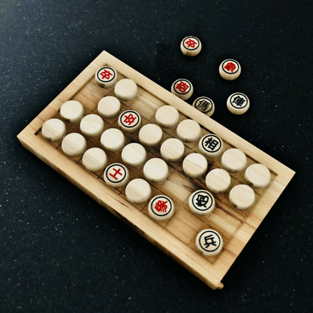

📜 Origin
Xiangqi, is also known as Chinese Chess, is a strategy board game that traces its roots back over 1,000 years, making it one of the oldest forms of chess in the world.
- The word "象棋" literally means "Elephant Game" or "Image Game".
- It is believed to have evolved from Chaturanga, an ancient Indian board game that also gave rise to Western Chess and Shogi (Japanese Chess).
- Xiangqi developed independently in China, incorporating local military culture, philosophy, and symbolism.
🐉 Cultural Significance
- Xiangqi reflects ancient Chinese warface -- generals, soldiers, chariots, and cannons on a battlefield.
- The board includes symbolic elements like the "river"（楚河汉界）representing the historic divide between the Chu and Han kingdoms.
- Considered a key part of Chinese intellectual tradition, often played in parks, schools, and homes.
Description of Pieces of Xiangqi
Let's click on the chess!
🤔 MCQ
1. Which chess piece is the strongest piece?
🧱 Standard 1v1
🔹Description
Standard 1v1 Xiangqi is the classic version of Chinese Chess played between two players
It emphasizes strategy, defense, and tactical play, deeply rooted in Chinese military philosophy
🧩 Setup
Board:
9 vertical lines x 10 horizontal lines
River:
Divides the two sides in the middle, labeled as 楚河汉界 (Chu River and Han Border)
Palaces:
3x3 suqare areas in the center of each player's side
Pieces:
Each side (red & black) has:
1 General, 2 Advisors, 2 Elephants, 2 Horses, 2 Chariots, 2 Cannons, 2 Soldiers
📜 Rules
Turn-Based:
Red moves first, followed by Black
Movement:
Each piece has specific movement patterns
(please refer to the 👉chess pieces👈)
Restrictions:
Generals can't face each other directly without another piece between them
Elephants
cannot cross the river
Advisors and Generals
must remain inside the palace
Goal:
Checkmate the opponent's General
✨ Key Features
👀 Full visibility-players see all pieces
🚩 Strong emphasis on tactical formations
📚 A rich tradition with books and theories for openings, midgames and endgames
🤯 Highly strategic with minimal randomness
🕶️ Banqi (Dark Chess)
🔹Description
Banqi is a variant of Xiangqi played with the same pieces, but placed face down and turned over gradually
It is faster-paced, involving both luck and strategy
🧩 Setup
Board:
4 rows x 8 columns (half of a Standard Xiangqi Board)
Pieces:
All 32 Xiangqi pieces are shuffled and placed face down randomly on the board
No distinction
initially between Red or Black
Piece colors are revealed as flipped
📜 Rules
Players take turns to:
- Flip over a facedown piece
(first move must be a flip) - Or move/capture with a
face-up piece - Once a piece is flipped, its color
and rank are known
Capture Hierarchy:
Pieces can capture others of the same or lower rank
Exception:
Soldier can capture General
Cannon:
Can only capture by jumping exactly one piece between itself and the target
No check/checkmate
Game ends
when one player cannot move or has no pieces left
✨ Key Features
😲 Hidden information introduces surprise and excitement
⌛ Fast-paced and casual-popular in parks and among children
😣 Simple to start, but still rewards tactical thinking and memory
🔮 More luck-driven compared to standard Xiang Qi
🕹️ Mini Game
Score: 0
You are a Soldier. You can capture the "G"
You cannot capture the "A", "H", "E", or "C"
Fight to protect your country!